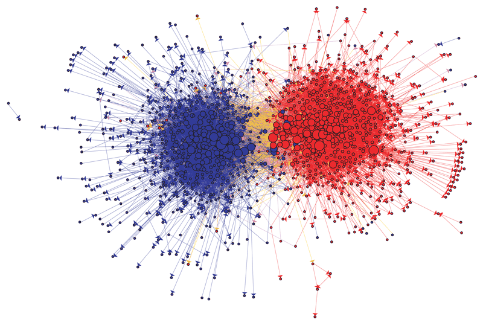

Théorie des graphes Cours 4 · L3 S5
Structure de communautés
Les graphes du réel s'organisent en groupes de sommets plus connectés entre eux qu'avec le reste du graphe : les communautés. Ce chapitre les définit à partir de la densité et des degrés interne et externe, puis présente deux façons de les détecter : la propagation de labels, simple et rapide, et l'algorithme de Louvain, qui maximise un critère de qualité, la modularité. Il se termine par une application : représenter le sens des mots avec l'algorithme SINr.
Objectifs
- Calculer la densité d'un graphe ou d'un sous-graphe, et vérifier qu'un ensemble de parties est une partition.
- Calculer les degrés interne et externe d'un sommet ; dire si une partie est une communauté faible ou forte ; calculer sa conductance.
- Dérouler l'algorithme de propagation de labels sur un petit graphe et citer ses limites.
- Calculer la modularité d'une partition, l'interpréter, et comparer deux partitions.
- Expliquer les deux phases de l'algorithme de Louvain, lire un dendrogramme et construire un méta-graphe.
- Décrire les trois étapes de SINr et calculer un vecteur de mot et une similarité cosinus.
Complément À propos des sources
Cette page reprend le chapitre 4 du poly ; les notes de séance ne le couvrent pas encore. Les densités, la propagation de labels, les modularités et les vecteurs de SINr ont été recalculés avec NetworkX. Le graphe de 16 sommets de Blondel et al. (figure 4.7) a été relevé sur la figure et redessiné : l'algorithme de Louvain de NetworkX y retrouve exactement les communautés du poly. Les mots de la figure 4.11, une capture d'écran, sont recopiés dans un tableau.
Des groupes dans les graphes p. 38–39
Les graphes qui modélisent le réel sont en général connexes, de diamètre et de largeur moyenne faibles, et leur coefficient de clustering élevé indique de la transitivité. Dans un réseau social, cette transitivité a un sens : l'ami·e de mon ami·e est souvent mon ami·e. Elle vient aussi de notre appartenance à des groupes et à des organisations : un club de sport, une famille, une promotion. Appartenir aux mêmes groupes pèse fortement sur la structure du réseau : il s'y forme des groupes de sommets plus connectés entre eux qu'avec le reste du graphe. On parle de structure de communautés.
On retrouve cette structuration dans les réseaux de co-occurrences de mots : des mots liés par le thème apparaissent souvent ensemble dans les mêmes phrases, et sont donc plus connectés entre eux qu'avec le reste du graphe.
Remarque « Communities, communities, and more communities » p. 39
Girvan et Newman ont les premiers l'intuition, en 2002, que de nombreux réseaux du réel sont organisés en communautés, qu'on peut les détecter par des moyens informatiques et qu'elles renseignent sur ces systèmes :
« Les communautés d'un réseau social représentent probablement des groupes sociaux réels, formés par exemple autour d'intérêts communs ou d'un même parcours ; celles d'un réseau de citations, des articles sur un même sujet ; celles d'un réseau métabolique, des cycles et des groupes fonctionnels ; celles du web, des pages qui parlent du même sujet. Savoir identifier ces communautés pourrait nous aider à comprendre et à exploiter ces réseaux plus efficacement. »
M. Girvan et M. E. J. Newman, Community structure in social and biological networks, 2002.

Pour détecter ces communautés, le chapitre présente deux algorithmes. La propagation de labels suit un principe simple : chaque sommet porte un label, celui de son groupe, et adopte le label majoritaire parmi ses voisins. L'algorithme de Louvain maximise la modularité, un critère qui note une structure de communautés : plus il y a de liens au sein des communautés par rapport aux liens entre communautés, plus il est élevé.
Densité, partition et communautés p. 40–41
Girvan et Newman définissent les communautés comme des groupes de sommets à l'intérieur desquels les connexions sont denses, alors que les connexions entre groupes le sont moins. Il faut donc d'abord mesurer la densité.
La densité p. 40
Définition 21 Densité
La densité d'un graphe \(G = (V, E)\) non orienté est le rapport entre le nombre d'arêtes observées et le nombre d'arêtes possibles. Avec \(n = |V|\) et \(m = |E|\) :
Elle se calcule aussi sur le sous-graphe induit par un ensemble de sommets.
La densité grandit avec le nombre d'arêtes, mais tient compte du nombre de sommets : elle vaut 1 pour un graphe complet et 0 sans arête. Dans la figure 4.2, il y a deux composantes connexes : \(G_C\), induit par C, D, E, et \(G_A\), induit par A, B, F, G. \(G_A\) a 4 arêtes et \(G_C\) seulement 3, et pourtant \(G_C\) est plus dense :
Au sens de Girvan et Newman, ces deux ensembles de sommets peuvent former des communautés : leurs connexions sont plus denses à l'intérieur qu'entre eux. Entre les deux, chacun des 3 sommets de \(G_C\) aurait pu se relier à chacun des 4 sommets de \(G_A\) : 12 liens possibles, aucun présent. Ajout La densité entre les deux groupes, liens présents sur liens possibles, vaut donc \(0/12 = 0\).
Les graphes du réel sont plus compliqués, comme le montre la figure 4.1 : beaucoup plus de sommets, un graphe connexe, et des liens entre la communauté des blogs libéraux et celle des blogs conservateurs.
Partition et structure de communautés p. 40–41
Définition 22 Partition
Un ensemble \(\mathcal{P} = \{P_1, P_2, \dots, P_k\}\) est une partition des sommets \(V\) d'un graphe si et seulement si :
- \(\forall i \in \{1, \dots, k\},\ P_i \subset V\) : c'est un ensemble de sous-ensembles de \(V\) ;
- \(\bigcup_{i=1}^{k} P_i = V\) : chaque sommet appartient à au moins une partie ;
- \(\forall i \neq j,\ P_i \cap P_j = \emptyset\) : les parties sont deux à deux disjointes, donc chaque sommet appartient à une et une seule partie.
Ajout On demande aussi d'ordinaire que chaque partie soit non vide.
Définition 23 Structure de communautés
La structure de communautés d'un graphe est une partition de ses sommets dont chaque partie correspond à une communauté : la densité du sous-graphe induit par chaque partie est supérieure à la densité des liens entre les parties.
Communautés faibles et fortes p. 41
Radicchi et al. précisent cette idée en 2004, dans Defining and identifying communities in networks, avec deux notions formelles. Il faut pour cela distinguer, parmi les voisins d'un sommet, ceux de sa communauté et les autres.
Définition 24 Degrés interne et externe
Soit \(u\) un sommet de la partie \(P\) d'une partition \(\mathcal{P}\) des sommets. Ses degrés interne \(d^{in}\) et externe \(d^{out}\) sont :
- \(d^{in}(u) = |\{v \in P \mid v \in N(u)\}|\), le nombre de voisins de \(u\) dans sa communauté ;
- \(d^{out}(u) = |\{v \notin P \mid v \in N(u)\}|\), le nombre de voisins de \(u\) hors de sa communauté ;
- \(d(u) = d^{in}(u) + d^{out}(u)\).
Définition 25 Communauté faible
Une partie \(P\) est une communauté faible si la somme des degrés internes de ses sommets dépasse celle de leurs degrés externes :
Définition 26 Communauté forte
Une partie \(P\) est une communauté forte si chacun de ses sommets a plus de voisins dans la communauté qu'à l'extérieur :
Une communauté faible est, globalement, plus connectée en interne qu'avec le reste du graphe. Une communauté forte l'est sommet par sommet : la définition est plus exigeante, et ces communautés sont plus difficiles à trouver. Ajout Une communauté forte est toujours faible : il suffit de sommer les inégalités sur les sommets de \(P\).
La conductance p. 41
Près de dix ans plus tard, Yang et Leskovec montrent, dans Defining and evaluating network communities based on ground-truth, qu'on peut mesurer la qualité d'une communauté par sa conductance.
Définition 27 Conductance
Soit \(P\) une partie d'une partition. On note \(\Sigma^{in}_P = \frac{1}{2} \sum_{u \in P} d^{in}(u)\) le nombre de liens à l'intérieur de la communauté, et \(\Sigma^{out}_P = \sum_{u \in P} d^{out}(u)\) le nombre de liens qui en sortent. Le poly définit la conductance par :
On recherche une conductance faible : peu de liens sortent de la communauté, relativement à l'ensemble de ses liens.
Attention Le dénominateur de la conductance À vérifier
Le poly explique que le dénominateur est « la somme des liens internes et sortants, c'est-à-dire des degrés totaux des sommets de la communauté ». Or la somme des degrés des sommets de \(P\) vaut \(\sum_{u \in P} d^{in}(u) + \Sigma^{out}_P = 2\,\Sigma^{in}_P + \Sigma^{out}_P\) : chaque lien interne y compte deux fois, une par extrémité. C'est la définition de Yang et Leskovec :
La formule du poly, avec \(\Sigma^{in}_P\) compté une seule fois, donne une valeur plus grande, mais classe les communautés à peu près de la même façon. À l'examen, préciser la formule employée.
Exemple Le graphe des figures 4.4 et 4.5, sans les poids Ajout
On prend le graphe de la figure 4.4 plus bas (arêtes C–B, C–A, B–A, C–D, D–E, D–F, E–F) en ignorant les poids, et la partition \(\{A, B, C\}, \{D, E, F\}\).
- A : voisins B et C, tous deux dans sa partie, donc \(d^{in} = 2\), \(d^{out} = 0\). De même pour B. C : voisins A, B (dedans) et D (dehors), donc \(d^{in} = 2\), \(d^{out} = 1\). Chaque sommet a \(d^{in} \gt d^{out}\) : \(\{A, B, C\}\) est une communauté forte. Par symétrie, \(\{D, E, F\}\) aussi.
- Densité de chaque partie : \(\frac{2 \cdot 3}{3 \cdot 2} = 1\). Densité entre les parties : 1 lien (C–D) sur \(3 \times 3 = 9\) possibles, soit \(1/9\).
- Conductance de \(\{A, B, C\}\) : \(\Sigma^{in} = 3\), \(\Sigma^{out} = 1\). Formule du poly : \(1/(1 + 3) = 0{,}25\) ; formule de Yang et Leskovec : \(1/(2 \cdot 3 + 1) = 1/7 \approx 0{,}14\).
Exercice 1 Une partition moins naturelle Ajout
Sur le même graphe sans poids, on prend la partition \(\{A, B, E, F\}, \{C, D\}\) (figure 4.5). Calculer les degrés interne et externe de chaque sommet. Chaque partie est-elle une communauté faible ? forte ? Calculer la conductance de \(\{C, D\}\) avec les deux formules.
Indice
Dans \(\{A, B, E, F\}\), A n'a qu'un voisin dans sa partie : B. Pour une communauté faible, l'inégalité est stricte.
Solution proposée
\(\{A, B, E, F\}\) : A a \(d^{in} = 1\) (B) et \(d^{out} = 1\) (C) ; B de même (A ; C) ; E : \(d^{in} = 1\) (F), \(d^{out} = 1\) (D) ; F de même. Sommes : \(4\) contre \(4\), l'inégalité stricte n'est pas vérifiée : ce n'est ni une communauté faible ni, a fortiori, une communauté forte. \(\{C, D\}\) : C a \(d^{in} = 1\) (D) et \(d^{out} = 2\) (A, B) ; D a \(d^{in} = 1\) (C) et \(d^{out} = 2\) (E, F). Sommes : \(2\) contre \(4\), ce n'est pas non plus une communauté faible. Conductance de \(\{C, D\}\) : \(\Sigma^{in} = 1\), \(\Sigma^{out} = 4\) ; formule du poly \(4/5 = 0{,}8\), formule de Yang et Leskovec \(4/6 \approx 0{,}67\). Les deux sont bien plus élevées que pour \(\{A, B, C\}\).
L'algorithme de propagation de labels p. 42–43
Pour regrouper les sommets d'un graphe en communautés, afin de mieux comprendre son organisation (par exemple, découvrir les différents courants d'un Twitter politique), on exécute un algorithme de détection de communautés.
Un apprentissage non supervisé p. 42
Les algorithmes de détection de communautés relèvent de l'apprentissage automatique non supervisé. En apprentissage supervisé, on dispose de données étiquetées, par exemple des photos identifiées comme des chats ou des chiens. Ces photos sont représentées par des vecteurs (leurs pixels, par exemple), et l'algorithme apprend une fonction qui associe à un vecteur un type d'animal. En non supervisé, on veut séparer les données en groupes cohérents sans aucun exemple : une collection de photos d'animaux, sans savoir quels animaux s'y trouvent, ni combien d'espèces. La détection de communautés est de ce type : on veut partitionner un graphe sans savoir combien il y a de communautés ni ce qu'elles contiennent. Les seuls guides sont des définitions comme les définitions 25 et 26, qui décrivent ce que l'on cherche.
L'algorithme p. 42
L'algorithme de propagation de labels, proposé en 2007 par Raghavan et al., s'appuie sur la définition 26 :
# Algorithme 5 : propagation de labels
1. Initialisation : on affecte un label différent à chaque sommet
2. Mélange : on range les sommets dans un ordre aléatoire
3. Affectation : dans cet ordre, chaque sommet prend le label
majoritaire parmi ses voisins ; en cas d'égalité entre plusieurs
labels, il en choisit un au hasard parmi ceux-là
4. On répète les étapes 2 et 3 jusqu'à convergence :
plus aucun sommet ne change de labelLa règle d'affectation traduit la définition 26 : on veut des sommets plus connectés à leur communauté qu'à l'extérieur. L'algorithme, bien que non supervisé, utilise donc ce que l'on sait de l'allure d'une communauté. Il est agglomératif : au départ, chaque sommet a son propre label ; peu à peu, les sommets se regroupent, les communautés grossissent et leur nombre diminue.
Un exemple d'exécution p. 42–43
Dans la figure 4.3, chaque sommet reçoit d'abord un label différent, de 1 à 6. Le mélange donne l'ordre C, D, E, F, B, A. Les affectations se font une par une, et chaque sommet voit les labels déjà mis à jour par les précédents.
| Étape | Sommet | Labels des voisins | Nouveau label |
|---|---|---|---|
| 1 | C | B : 2, A : 1, D : 4 | égalité entre 1, 2 et 4 : 1, tiré au hasard |
| 2 | D | C : 1, E : 5, F : 6 | égalité entre 1, 5 et 6 : 5, tiré au hasard |
| 3 | E | D : 5, F : 6 | égalité entre 5 et 6 : 5, tiré au hasard (E garde son label) |
| 4 | F | D : 5, E : 5 | 5, majoritaire |
| 5 | B | C : 1, A : 1 | 1, majoritaire |
| 6 | A | C : 1, B : 1 | 1, majoritaire (A garde son label) |
On obtient deux communautés : A, B, C de label 1, et D, E, F de label 5. Ajout Un second tour, dans n'importe quel ordre, ne change plus rien : C voit 1, 1, 5 et garde 1 ; D voit 1, 5, 5 et garde 5 ; chacun des autres ne voit que son propre label. L'algorithme a convergé.
Attention Le nombre de voisins dans le texte du poly À vérifier
Le poly écrit que C a « deux voisins, un avec le label 3, un avec le label 1 », et que D n'a pas de label majoritaire « parmi ses deux voisins ». D'après la figure, C a trois voisins, B (2), A (1) et D (4), et son propre label 3 n'entre pas en compte ; D a aussi trois voisins, C (1), E (5) et F (6). Le résultat ne change pas : il y a bien égalité dans les deux cas. Les vignettes (c) et (d) de la figure portent toutes deux le titre « Étape 2 » ; la seconde correspond à l'étape 3.
Exercice 2 Un autre ordre Ajout
Reprendre la figure 4.3 depuis l'initialisation (A1, B2, C3, D4, E5, F6) avec l'ordre F, E, D, C, B, A. Pour rendre le calcul reproductible, on départage les égalités en prenant le plus petit label. Donner les labels après le premier tour, puis vérifier la convergence.
Solution proposée
F voit D (4) et E (5) : égalité, il prend 4. E voit D (4) et F (4) : 4. D voit C (3), E (4), F (4) : 4 est majoritaire. C voit B (2), A (1), D (4) : égalité, il prend 1. B voit C (1) et A (1) : 1. A voit C (1) et B (1) : 1. Après un tour : A, B, C ont le label 1, D, E, F le label 4. Au second tour, C voit 1, 1, 4 et D voit 1, 4, 4 : rien ne change. On retrouve les deux mêmes communautés, avec un autre nom pour la seconde.
Les limites de l'algorithme p. 44
La propagation de labels est appréciée pour sa rapidité et sa simplicité. En revanche :
- ses résultats varient énormément selon le mélange, donc selon l'ordre des affectations ;
- le hasard qui départage les égalités peut jouer un rôle important ;
- sa convergence n'est pas garantie : il peut osciller d'un état à un autre.
Ces limites sont très étudiées, et les solutions proposées se font souvent au détriment de la simplicité de l'algorithme.
Complément Avec NetworkX
import networkx as nx
G = nx.Graph([("C", "B"), ("C", "A"), ("B", "A"), ("C", "D"),
("D", "E"), ("D", "F"), ("E", "F")])
print([sorted(P) for P in nx.community.label_propagation_communities(G)])
print([sorted(P) for P in nx.community.asyn_lpa_communities(G, seed=1)])$ python labels.py
[['A', 'B', 'C'], ['D', 'E', 'F']]
[['A', 'B', 'C'], ['D', 'E', 'F']]asyn_lpa_communities suit l'algorithme du cours : les sommets sont mis à jour un par un, dans un ordre aléatoire. label_propagation_communities est une variante « semi-synchrone », dont le résultat ne dépend pas du hasard et qui converge toujours. Raghavan et al. arrêtent l'algorithme quand chaque sommet porte l'un des labels les plus fréquents parmi ses voisins : en cas d'égalité, un sommet qui change de label à chaque tour n'empêche ainsi pas l'arrêt. Hors programme
La modularité p. 44–46
En 2008, un excellent concurrent de la propagation de labels apparaît : l'algorithme de Louvain, proposé par Blondel et al. dans Fast unfolding of communities in large networks. Lui aussi très rapide, il donne des résultats de meilleure qualité et converge toujours ; c'est probablement l'algorithme de détection de communautés le plus utilisé. Il maximise la modularité, introduite sous sa forme courante par Newman en 2006 : une fonction qui note la qualité d'une partition. Plus elle est élevée, meilleures semblent les communautés.
Définition p. 44
On décrit la partition par un vecteur d'affectation \(C\) : pour tout sommet \(u\), \(C_u\) est son label, donc sa communauté. À la fin de la propagation de labels de la figure 4.3, par exemple, \(C = (1, 1, 1, 5, 5, 5)\) pour les sommets A, B, C, D, E, F.
Définition 28 Modularité
avec \(m\) la somme des poids des arêtes (dans un graphe non pondéré, chaque arête pèse 1, et \(m\) est le nombre d'arêtes) ; \(W(uv)\) le poids de l'arête entre \(u\) et \(v\), 0 s'il n'y en a pas ; \(d_w(u)\) le degré pondéré de \(u\) ; \(\delta(C_u, C_v)\) vaut 1 si \(C_u = C_v\), 0 sinon.
Définition 29 Maximisation de la modularité
Étant donné un graphe \(G\), on cherche le vecteur d'affectation qui maximise la modularité : \(\displaystyle \operatorname*{argmax}_C Q(G, C)\).
Comme \(\delta\) vaut 0 entre deux communautés différentes, seuls comptent les couples \((u, v)\) d'une même communauté. Et comme la double somme parcourt tous les couples, chaque paire \(\{u, v\}\) y figure deux fois, \((u, v)\) et \((v, u)\), en plus des couples \((u, u)\).
Comprendre la modularité p. 44–45
La modularité compare le poids du lien observé entre \(u\) et \(v\) au poids qu'il aurait, en moyenne, dans un graphe aléatoire où les degrés de tous les sommets seraient conservés. Si, étant donné leurs degrés, il était peu probable que \(u\) et \(v\) soient reliés par hasard, le lien observé signale une vraie proximité : on cherche à les mettre dans la même communauté.
Remplaçons une arête de poids \(W(uv)\) par \(W(uv)\) arêtes entre \(u\) et \(v\) : on a alors \(m\) arêtes, donc \(2m\) extrémités d'arêtes. Soit \(X\) le tirage au hasard, uniforme, d'une extrémité d'arête : chacune a la probabilité \(\frac{1}{2m}\).
- Dans le graphe aléatoire, la probabilité de tirer une extrémité rattachée à \(u\) dépend du degré de \(u\) : \(p(X = u) = \frac{d_w(u)}{2m}\), et de même \(p(X = v) = \frac{d_w(v)}{2m}\). Si les deux tirages sont indépendants, la probabilité d'obtenir une arête d'extrémités \(u\) et \(v\) est \(\frac{d_w(u)}{2m} \cdot \frac{d_w(v)}{2m}\) : c'est le second terme de la parenthèse.
- Dans le graphe étudié, cette probabilité dépend du nombre d'arêtes qui relient vraiment \(u\) et \(v\) : \(\frac{W(uv)}{2m}\), le premier terme.
Si le terme observé dépasse le terme aléatoire, mettre \(u\) et \(v\) dans la même communauté augmente la modularité : on donne de l'importance à un événement observé qui avait peu de chances d'arriver par hasard.
Méthode Calculer la modularité communauté par communauté Ajout
En regroupant les termes d'une même communauté \(c\), on obtient une formule bien plus rapide à la main. Notons \(L_c\) le poids total des arêtes internes à \(c\) et \(D_c = \sum_{u \in c} d_w(u)\) la somme des degrés de ses sommets :
En effet, dans la double somme, chaque arête interne compte deux fois, donc \(\sum_{u, v \in c} \frac{W(uv)}{2m} = \frac{2 L_c}{2m}\), et \(\sum_{u, v \in c} d_w(u)\, d_w(v) = D_c^2\). \(\frac{L_c}{m}\) est la part des liens qui tombent dans la communauté ; \(\left(\frac{D_c}{2m}\right)^2\) est cette part attendue au hasard. Quelques repères : tout le graphe en une seule communauté donne \(Q = 1 - 1 = 0\) ; une partition en singletons donne une valeur négative ; \(Q\) est toujours inférieure à 1.
Deux exemples de calcul p. 45–46
La somme des poids vaut \(m = 2 + 1 + 3 + 1 + 1 + 1 + 1 = 10\), donc \(2m = 20\). Les degrés pondérés sont \(d_w(A) = 4\), \(d_w(B) = 5\), \(d_w(C) = 4\), \(d_w(D) = 3\), \(d_w(E) = 2\), \(d_w(F) = 2\) (leur somme fait bien 20). Dans le graphe, la probabilité de tirer une arête entre A et B est \(\frac{W(AB)}{m} = \frac{3}{10}\).
Partition de la figure 4.4, \(\{A, B, C\}\) et \(\{D, E, F\}\). Le poly ne garde que les couples de sommets distincts d'une même communauté, chaque paire comptant deux fois :
| Paire | \(\frac{W(uv)}{2m}\) | \(\frac{d_w(u)}{2m} \cdot \frac{d_w(v)}{2m}\) | Différence |
|---|---|---|---|
| A, B | \(\frac{3}{20} = \frac{60}{400}\) | \(\frac{4 \cdot 5}{400} = \frac{20}{400}\) | \(\frac{40}{400}\) |
| A, C | \(\frac{1}{20} = \frac{20}{400}\) | \(\frac{4 \cdot 4}{400} = \frac{16}{400}\) | \(\frac{4}{400}\) |
| B, C | \(\frac{2}{20} = \frac{40}{400}\) | \(\frac{5 \cdot 4}{400} = \frac{20}{400}\) | \(\frac{20}{400}\) |
| D, E | \(\frac{1}{20} = \frac{20}{400}\) | \(\frac{3 \cdot 2}{400} = \frac{6}{400}\) | \(\frac{14}{400}\) |
| E, F | \(\frac{1}{20} = \frac{20}{400}\) | \(\frac{2 \cdot 2}{400} = \frac{4}{400}\) | \(\frac{16}{400}\) |
| D, F | \(\frac{1}{20} = \frac{20}{400}\) | \(\frac{3 \cdot 2}{400} = \frac{6}{400}\) | \(\frac{14}{400}\) |
Chaque paire compte deux fois, \((u, v)\) et \((v, u)\) : \(Q = 2 \cdot \frac{40 + 4 + 20 + 14 + 16 + 14}{400} = \frac{216}{400} = 0{,}54\).
Partition de la figure 4.5, \(\{A, B, E, F\}\) et \(\{C, D\}\) : paires AB, EF, AE, AF, BE, BF et CD.
La partition de la figure 4.4 a la modularité la plus élevée : elle est de meilleure qualité, ce qui correspond à l'intuition.
Attention Les termes oubliés et quelques coquilles À vérifier
- La double somme de la définition 28 contient aussi les couples \((u, u)\), qui valent \(0 - \left(\frac{d_w(u)}{2m}\right)^2\) sans boucle. Le poly les omet. Avec eux, la formule par communauté donne pour la figure 4.4 : \(\left(\frac{6}{10} - \frac{13^2}{400}\right) + \left(\frac{3}{10} - \frac{7^2}{400}\right) = \frac{142}{400} = 0{,}355\), et pour la figure 4.5 : \(\left(\frac{4}{10} - \frac{13^2}{400}\right) + \left(\frac{1}{10} - \frac{7^2}{400}\right) = -\frac{18}{400} = -0{,}045\). Ce sont les valeurs que renvoie NetworkX. Les termes omis valent \(\frac{74}{400}\) quelle que soit la partition (tout sommet est dans sa propre communauté) : la comparaison des deux partitions n'en est pas changée.
- Le calcul de la figure 4.5 aboutit à \(\frac{58}{400}\) dans le poly ; le détail donne \(\frac{56}{400}\), qui s'arrondit aussi à 0,14.
- La légende de la figure 4.4 calcule les probabilités du graphe aléatoire avec \(m\) au dénominateur, \(\frac{4}{10} \cdot \frac{5}{10} = \frac{20}{100}\), alors que la définition et le calcul qui suit utilisent \(2m\) : \(\frac{4}{20} \cdot \frac{5}{20} = \frac{20}{400}\).
Complément La modularité en Python
import networkx as nx
G = nx.Graph()
G.add_weighted_edges_from([("C", "B", 2), ("C", "A", 1), ("B", "A", 3),
("C", "D", 1), ("D", "E", 1), ("D", "F", 1), ("E", "F", 1)])
def modularite(G, partition):
m = G.size(weight="weight") # somme des poids
Q = 0
for P in partition:
L = G.subgraph(P).size(weight="weight") # poids interne
D = sum(d for _, d in G.degree(P, weight="weight")) # somme des degrés
Q += L / m - (D / (2 * m)) ** 2
return Q
for partition in ([{"A", "B", "C"}, {"D", "E", "F"}], [{"A", "B", "E", "F"}, {"C", "D"}]):
print(round(modularite(G, partition), 3),
round(nx.community.modularity(G, partition, weight="weight"), 3))$ python modularite.py
0.355 0.355
-0.045 -0.045Exercice 3 D'autres partitions du même graphe Ajout
Avec la formule par communauté (couples \((u, u)\) compris), calculer la modularité des partitions suivantes du graphe pondéré des figures 4.4 et 4.5 : (a) \(\{A, B\}, \{C\}, \{D, E, F\}\) ; (b) six singletons ; (c) une seule communauté avec tous les sommets.
Indice
Pour \(\{A, B\}\) : \(L = 3\), \(D = 4 + 5 = 9\). Pour un singleton \(\{u\}\) : \(L = 0\).
Solution proposée
(a) \(\left(\frac{3}{10} - \frac{81}{400}\right) + \left(0 - \frac{16}{400}\right) + \left(\frac{3}{10} - \frac{49}{400}\right) = \frac{240 - 146}{400} = \frac{94}{400} = 0{,}235\), moins que 0,355 : isoler C fait perdre ses liens forts vers A et B. (b) \(-\frac{16 + 25 + 16 + 9 + 4 + 4}{400} = -\frac{74}{400} = -0{,}185\). (c) \(\frac{10}{10} - \left(\frac{20}{20}\right)^2 = 0\). Valeurs vérifiées avec NetworkX.
L'algorithme de Louvain p. 47–48
Comme la propagation de labels, l'algorithme de Louvain est agglomératif : au départ, chaque sommet forme sa propre communauté, il y a donc autant de communautés que de sommets. On calcule la modularité de cette partition, puis on déplace des sommets d'une communauté à l'autre pour l'augmenter.
Phase 1 : optimiser la modularité p. 47
# Algorithme 6 : algorithme de Louvain, phase 1
1. Initialisation : chaque sommet est une communauté singleton
2. Mélange : on range les sommets dans un ordre aléatoire
3. Affectation : dans cet ordre, pour chaque sommet u, on parcourt
ses voisins v et l'on calcule le gain de modularité obtenu en retirant u
de sa communauté pour le placer dans celle de v ; on place u dans la
communauté du gain le plus élevé ; si aucun gain n'est possible,
u reste dans sa communauté
4. On répète les étapes 2 et 3 jusqu'à convergence :
plus aucun sommet ne change de communautéMéthode Le gain de modularité Ajout
Retirons \(u\) de sa communauté : il est seul. Le placer dans une communauté \(c\) fait varier la modularité de :
où \(k_{u,c}\) est la somme des poids des arêtes entre \(u\) et les sommets de \(c\), et \(D_c\) la somme des degrés des sommets de \(c\), \(u\) non compris. Cela se déduit de la formule par communauté : \(L_c\) gagne \(k_{u,c}\) et \(D_c\) gagne \(d_w(u)\). On compare ce gain pour chaque communauté voisine, y compris celle d'où vient \(u\) : on garde le plus grand, et \(u\) reste seul si tous sont négatifs.
Exemple La phase 1 sur le graphe des figures 4.4 et 4.5 Ajout
\(m = 10\), donc \(2m^2 = 200\). On prend l'ordre A, B, C, D, E, F et, en cas d'égalité, la première communauté rencontrée.
- A (\(d_w = 4\)) : vers B, \(\frac{3}{10} - \frac{5 \cdot 4}{200} = 0{,}20\) ; vers C, \(\frac{1}{10} - \frac{4 \cdot 4}{200} = 0{,}02\). A rejoint B.
- B (\(d_w = 5\)) : rester avec A, \(\frac{3}{10} - \frac{4 \cdot 5}{200} = 0{,}20\) ; vers C, \(\frac{2}{10} - \frac{4 \cdot 5}{200} = 0{,}10\). B reste.
- C (\(d_w = 4\)) : vers \(\{A, B\}\), \(\frac{3}{10} - \frac{9 \cdot 4}{200} = 0{,}12\) ; vers D, \(\frac{1}{10} - \frac{3 \cdot 4}{200} = 0{,}04\). C rejoint \(\{A, B\}\).
- D (\(d_w = 3\)) : vers \(\{A, B, C\}\), \(\frac{1}{10} - \frac{13 \cdot 3}{200} = -0{,}095\) ; vers E ou vers F, \(\frac{1}{10} - \frac{2 \cdot 3}{200} = 0{,}07\). D rejoint E.
- E (\(d_w = 2\)) : rester avec D, \(\frac{1}{10} - \frac{3 \cdot 2}{200} = 0{,}07\) ; vers F, \(\frac{1}{10} - \frac{2 \cdot 2}{200} = 0{,}08\). E quitte D pour F !
- F : rester avec E, 0,08 ; vers D, 0,07. F reste.
Après un tour : \(\{A, B, C\}\), \(\{D\}\), \(\{E, F\}\). Au deuxième tour, D gagne \(\frac{2}{10} - \frac{4 \cdot 3}{200} = 0{,}14\) en rejoignant \(\{E, F\}\) ; les autres ne bougent pas. Au troisième, plus rien ne change : la phase 1 rend \(\{A, B, C\}, \{D, E, F\}\), de modularité 0,355. Il a fallu plusieurs tours, d'où l'étape 4.
Phase 2 : construire le méta-graphe p. 47
Dans la seconde phase, on construit un nouveau graphe, le méta-graphe : chaque communauté du graphe initial y devient un sommet, et ces sommets sont reliés par des liens pondérés selon le nombre de liens entre les communautés du graphe initial. Les liens internes à une communauté deviennent une boucle sur son sommet.
L'algorithme enchaîne les phases 1 et 2, en une ou plusieurs passes, jusqu'à ce que plus rien ne change : la phase 1 de la passe suivante travaille sur le méta-graphe. L'algorithme est hiérarchique : chaque passe donne une structure de communautés d'une granularité différente, avec d'abord de nombreuses petites communautés, puis moins de communautés, mais plus grandes.
Ajout Sur l'exemple précédent, le méta-graphe a deux sommets, \(X = \{A, B, C\}\) et \(Y = \{D, E, F\}\), reliés par un lien de poids 1 (l'arête C–D). Réunir \(X\) et \(Y\) ferait passer la modularité de 0,355 à 0 : la deuxième passe ne change rien, l'algorithme s'arrête.
Un exemple en deux passes p. 47–48
- À la fin de la phase 1 de la première passe, on obtient quatre communautés : \(\{0, 1, 2, 4, 5\}\) (Verte), \(\{3, 6, 7\}\) (Bleue), \(\{8, 9, 10, 12, 14, 15\}\) (Rouge) et \(\{11, 13\}\) (Grise). C'est le premier niveau de la hiérarchie.
- La phase 2 construit un méta-graphe de quatre sommets. Ses liens pondérés comptent les liens d'une communauté vers une autre dans le graphe initial, et ses boucles les liens d'une communauté vers elle-même.
- La phase 1 de la seconde passe regroupe Verte avec Bleue (les deux sommets du haut du méta-graphe), Rouge avec Grise (ceux du bas). La phase 2 rend un méta-graphe de deux sommets : \(\{0, \dots, 7\}\) et \(\{8, \dots, 15\}\). C'est le second niveau de la hiérarchie.
Cette hiérarchie se dessine dans un dendrogramme (« dendogramme » dans le poly) : les sommets en bas, puis un étage par niveau de la hiérarchie.
Attention La communauté bleue À vérifier
Les légendes des figures 4.6 et 4.7 donnent la Bleue comme \(\{3, 5, 7\}\), avec un 5 aussi dans la Verte, ce qui est impossible dans une partition. Sur la figure de Blondel et al. et dans le dendrogramme, les sommets bleus sont 3, 6 et 7 : la Bleue est \(\{3, 6, 7\}\). C'est aussi ce que trouve l'algorithme de Louvain de NetworkX sur le graphe relevé.
Remarque Les poids du méta-graphe Ajout
Sur le graphe relevé, la communauté verte a 7 arêtes internes (0–2, 0–4, 0–5, 1–2, 1–4, 2–4, 2–5) et sa boucle porte 14 : chaque arête interne y compte deux fois, une par extrémité, comme dans la somme des degrés internes. De même, la Bleue a 2 arêtes internes (boucle 4), la Rouge 8 (boucle 16) et la Grise 1 (boucle 2). Entre Verte et Bleue, il y a bien 4 arêtes (0–3, 1–7, 2–6, 5–7), et 3 entre Rouge et Grise (8–11, 10–11, 10–13). Au second niveau, \(26 = 14 + 4 + 2 \times 4\) et \(24 = 16 + 2 + 2 \times 3\) ; le lien de poids 3 réunit les arêtes Verte–Rouge, Verte–Grise et Bleue–Grise. La modularité passe de 0,346 au premier niveau à 0,392 au second.
Complément Louvain avec NetworkX
import networkx as nx
aretes = [(1, 2), (1, 4), (1, 7), (2, 0), (2, 4), (2, 5), (2, 6), (0, 3), (0, 4), (0, 5),
(3, 7), (5, 7), (7, 6), (5, 11), (4, 10), (6, 11), (8, 15), (8, 14), (8, 9),
(8, 10), (8, 11), (9, 14), (9, 12), (14, 10), (12, 10), (10, 11), (10, 13), (11, 13)]
G = nx.Graph(aretes)
for niveau, partition in enumerate(nx.community.louvain_partitions(G, seed=0), start=1):
Q = nx.community.modularity(G, partition)
print(niveau, [sorted(P) for P in partition], round(Q, 3))$ python louvain.py
1 [[0, 1, 2, 4, 5], [3, 6, 7], [8, 9, 10, 12, 14, 15], [11, 13]] 0.346
2 [[0, 1, 2, 3, 4, 5, 6, 7], [8, 9, 10, 11, 12, 13, 14, 15]] 0.392louvain_partitions renvoie un niveau de la hiérarchie par passe ; louvain_communities ne renvoie que le dernier. Le paramètre seed fixe l'ordre de mélange.
Le sens des mots avec SINr p. 49–52
En extrayant d'un corpus un graphe de co-occurrences de mots, puis en y détectant les communautés, on peut obtenir une représentation informatique du sens des mots. C'est la méthode SINr, développée au LIUM (Laboratoire d'informatique de l'Université du Mans) et présentée en 2021 dans SINr: Fast Computing of Sparse Interpretable Node Representations is not a Sin!
Elle s'appuie sur deux linguistes. Pour John R. Firth (1957), « you shall know a word by the company it keeps » : on connaît le sens d'un mot par les contextes où il est employé, d'où le graphe de co-occurrences, qui relie les mots à leurs contextes. Pour Zellig S. Harris (1954), « linguistic items with similar distributions have similar meanings » : des mots qui ont les mêmes contextes, dans les mêmes proportions, ont des sens proches. SINr va plus loin et remplace les mots contextes par des groupes de mots contextes, que l'on veut proches par le thème : ce sont les communautés.
Étape 1 : extraire le graphe de co-occurrences p. 49
On prétraite d'abord le corpus pour normaliser le vocabulaire et ne garder que les mots significatifs (ce prétraitement est vu en M2). On extrait ensuite le graphe de co-occurrences : un sommet par mot, et un lien entre deux mots qui apparaissent dans une même phrase, pondéré par le nombre de phrases où ils apparaissent ensemble. Pour ne pas surcharger le graphe, on supprime les liens non significatifs, ceux pour lesquels \(\log \frac{\text{coocc}(mot_1, mot_2)}{\text{occ}(mot_1) \cdot \text{occ}(mot_2)} \lt 0\), où \(\text{coocc}\) est la fréquence de co-occurrence des deux mots dans une même phrase et \(\text{occ}\) la fréquence d'un mot dans le corpus.
Le corpus « My cat eats mice. Your owl eats mice. This owl flies. A crow flies slower than an eagle. » devient, après prétraitement : « cat eats mouse. owl eats mouse. owl flies. crow flies slower eagle. »
Attention Le filtre et le graphe de la figure À vérifier
- Avec des nombres d'occurrences bruts, \(\text{coocc}(mot_1, mot_2) \le \text{occ}(mot_1)\) et \(\text{occ}(mot_2) \ge 1\), donc le rapport ne dépasse jamais 1 et son logarithme n'est jamais positif. Le filtre n'a de sens qu'avec des probabilités : c'est l'information mutuelle ponctuelle (PMI), \(\log \frac{p(mot_1, mot_2)}{p(mot_1)\, p(mot_2)}\), négative quand deux mots apparaissent ensemble moins souvent que le hasard ne le voudrait.
- La phrase « crow flies slower eagle » devrait relier ses quatre mots deux à deux. La figure ne garde que crow–flies, flies–slower et slower–eagle ; manquent crow–slower, crow–eagle et flies–eagle, que le filtre PMI ne supprime pas sur ce corpus. Les calculs ci-dessous suivent la figure, avec laquelle la table 4.1 est cohérente.
Étape 2 : détecter les communautés p. 49–50
On cherche ensuite des groupes de mots cohérents par le thème. SINr vise un grand nombre de petites communautés : sans les laisser trop grossir, on espère qu'elles réunissent des mots très liés par le thème, comme une communauté « cuivre, laiton, or ». L'équipe utilise une version modifiée de la modularité et de l'algorithme de Louvain, mais la propagation de labels fonctionne aussi très bien. Sur le corpus d'exemple, on obtient deux communautés : \(C_0 = \{\text{cat}, \text{eats}, \text{mouse}, \text{owl}\}\) et \(C_1 = \{\text{flies}, \text{crow}, \text{slower}, \text{eagle}\}\).
Étape 3 : extraire les vecteurs p. 50–51
D'après Harris, deux mots qui se relient de la même façon aux communautés ont des sens proches. On calcule donc, pour chaque sommet, la proportion de ses liens qui aboutissent dans chaque communauté.
Définition 30 Proportion des liens vers une communauté
Avec \(k\) communautés, le vecteur du sommet \(u\) est \(\langle Pr(u, C_1), Pr(u, C_2), \dots, Pr(u, C_k) \rangle\).
| Mot | \(C_0\) | \(C_1\) |
|---|---|---|
| cat | 1 | 0 |
| eats | 1 | 0 |
| mouse | 1 | 0 |
| owl | \(2/3 \approx 0{,}67\) | \(1/3 \approx 0{,}33\) |
| flies | \(1/3 \approx 0{,}33\) | \(2/3 \approx 0{,}67\) |
| crow | 0 | 1 |
| eagle | 0 | 1 |
| slower | 0 | 1 |
Par exemple, owl est relié à eats et mouse, dans \(C_0\), et à flies, dans \(C_1\) : deux tiers de ses liens vont vers \(C_0\), un tiers vers \(C_1\), d'où le vecteur \(\langle 2/3, 1/3 \rangle\). mouse a un degré pondéré de 4 (cat, eats deux fois, owl), tout entier vers \(C_0\) : \(\langle 1, 0 \rangle\).
La figure 4.10 du poly représente la même chose en remplaçant chaque communauté par un sommet, relié à chaque mot par un lien de poids \(Pr(u, C_i)\). Le poly arrondit \(2/3\) à 0,66 ; l'arrondi correct est 0,67.
Utiliser les vecteurs p. 51–52
Ces vecteurs encapsulent le sens des mots du vocabulaire : deux mots de vecteurs proches (respectivement éloignés) ont des sens proches (respectivement éloignés). Pour comparer deux vecteurs, on utilise en général la similarité cosinus.
Définition 31 Similarité cosinus
Elle prend ses valeurs dans \([-1, 1]\) ; plus elle est proche de 1, plus les mots ont des sens proches.
Ajout Les vecteurs de SINr n'ont que des coordonnées positives ou nulles : leur cosinus est donc entre 0 et 1. Il vaut 1 pour deux vecteurs proportionnels, 0 pour deux mots qui ne partagent aucune communauté.
Exercice 4 Similarités du corpus d'exemple Ajout
Avec les vecteurs de la table 4.1, calculer \(\cos(\text{owl}, \text{flies})\), \(\cos(\text{cat}, \text{owl})\) et \(\cos(\text{cat}, \text{crow})\). Que penser de \(\cos(\text{cat}, \text{eats})\) ?
Solution proposée
\(\text{owl} \cdot \text{flies} = \frac{2}{9} + \frac{2}{9} = \frac{4}{9}\) et \(\|\text{owl}\| = \|\text{flies}\| = \frac{\sqrt{5}}{3}\), donc \(\cos = \frac{4/9}{5/9} = 0{,}8\). \(\cos(\text{cat}, \text{owl}) = \frac{2/3}{1 \cdot \sqrt{5}/3} = \frac{2}{\sqrt{5}} \approx 0{,}89\). \(\cos(\text{cat}, \text{crow}) = 0\) : aucune communauté en commun. \(\cos(\text{cat}, \text{eats}) = 1\) : les deux vecteurs sont identiques, alors qu'un nom et un verbe n'ont pas le même sens. Avec deux communautés seulement, les vecteurs sont trop grossiers pour distinguer ces mots : c'est pourquoi SINr cherche beaucoup de petites communautés sur de grands corpus.
| Mot | Similarité | Mot | Similarité |
|---|---|---|---|
| contre | 0,724 | corruption | 0,620 |
| sida | 0,705 | médicament | 0,610 |
| lutter | 0,703 | efficacité | 0,609 |
| lutte | 0,701 | antisémitisme | 0,609 |
| efficace | 0,682 | extrémisme | 0,601 |
| protester | 0,674 | paludisme | 0,597 |
| terrorisme | 0,665 | racisme | 0,592 |
| efficacement | 0,661 | combat | 0,584 |
| fléau | 0,656 | grippe | 0,568 |
| désinformation | 0,650 | remède | 0,567 |
| criminalité | 0,626 | dose | 0,567 |
| expérimental | 0,564 | ||
| discrimination | 0,561 |
SINr part donc d'un corpus de textes pour obtenir des vecteurs qui décrivent le sens de ses mots ; l'algorithme sera implémenté en TP. La figure 4.11 donne les mots les plus similaires à « vaccin » (définition 31), d'après des vecteurs extraits par Simon Guillot avec SINr sur un corpus de presse, pour sa thèse. On y trouve des noms de maladies (sida, paludisme, grippe), des mots du domaine médical (médicament, remède, dose, expérimental) et beaucoup de mots liés aux controverses sur la vaccination.
# Algorithme 7 : SINr
# Prend un corpus textuel, rend un vecteur pour chaque mot
procedure SINr(Corpus Cor)
Extraire le graphe de co-occurrences G de Cor
Détecter les communautés C de G
Extraire les vecteurs : distribution des liens
de chaque sommet de G vers les communautés de C
end procedureÀ retenir
L'essentiel
- Structure de communautés : partition des sommets telle que chaque partie est plus densément connectée en interne qu'avec le reste. Densité : \(\frac{2m}{n(n-1)}\).
- Degrés interne \(d^{in}\) et externe \(d^{out}\). Communauté faible : \(\sum d^{in} \gt \sum d^{out}\) sur la partie. Communauté forte : \(d^{in}(u) \gt d^{out}(u)\) pour chaque sommet. Forte implique faible.
- Conductance : liens sortants rapportés aux liens de la communauté ; on la veut faible. Yang et Leskovec divisent par la somme des degrés, \(2\Sigma^{in} + \Sigma^{out}\).
- Propagation de labels : un label par sommet, puis, dans un ordre aléatoire, chacun prend le label majoritaire de ses voisins (égalité tirée au hasard), jusqu'à stabilité. Rapide et simple, mais instable et sans garantie de convergence.
- Modularité : \(Q = \sum_c \left( \frac{L_c}{m} - \left(\frac{D_c}{2m}\right)^2 \right)\), liens observés dans les communautés moins liens attendus au hasard à degrés égaux. Plus elle est élevée, meilleure est la partition ; 0 pour une seule communauté.
- Louvain : phase 1, déplacer chaque sommet vers la communauté voisine du plus grand gain de modularité, jusqu'à stabilité ; phase 2, fusionner chaque communauté en un sommet du méta-graphe. Les passes successives donnent une hiérarchie, que résume un dendrogramme.
- SINr : graphe de co-occurrences, communautés, puis pour chaque mot le vecteur des proportions de ses liens vers chaque communauté ; on compare deux mots par la similarité cosinus.
Auto-évaluation
Un sous-graphe de 5 sommets a 6 arêtes. Sa densité ?
\(\frac{2 \cdot 6}{5 \cdot 4} = 0{,}6\).
Une communauté faible est-elle forcément forte ?
Non : un sommet peut avoir plus de voisins dehors que dedans, tant que la somme sur la partie reste favorable. L'inverse est vrai : une communauté forte est faible.
Pourquoi la propagation de labels donne-t-elle des résultats différents d'une exécution à l'autre ?
Parce que l'ordre des sommets est tiré au hasard à chaque tour, et que les égalités entre labels sont départagées au hasard.
Que compare la modularité ?
La part des liens qui tombent à l'intérieur des communautés avec celle que l'on attendrait dans un graphe aléatoire ayant les mêmes degrés.
Quelle est la modularité d'une partition en une seule communauté ?
0 : tous les liens sont internes (\(L/m = 1\)), et c'est aussi ce qu'on attend au hasard (\((2m/2m)^2 = 1\)).
Que devient une communauté dans le méta-graphe de Louvain ?
Un sommet. Ses liens internes deviennent une boucle, et les liens vers une autre communauté un seul lien, pondéré par leur nombre.
Un mot a 3 liens vers \(C_0\) et 1 vers \(C_1\). Son vecteur SINr ?
\(\langle 3/4, 1/4 \rangle = \langle 0{,}75 ; 0{,}25 \rangle\).
Références
- N. Dugué, Graphes et applications, poly du cours, Le Mans Université, 2026-2027 : chapitre 4.
- M. Girvan et M. E. J. Newman, Community structure in social and biological networks, PNAS, 2002.
- F. Radicchi et al., Defining and identifying communities in networks, PNAS, 2004.
- J. Yang et J. Leskovec, Defining and evaluating network communities based on ground-truth, 2012.
- U. N. Raghavan, R. Albert et S. Kumara, Near linear time algorithm to detect community structures in large-scale networks, Physical Review E, 2007.
- M. E. J. Newman, Modularity and community structure in networks, PNAS, 2006.
- V. D. Blondel, J.-L. Guillaume, R. Lambiotte et E. Lefebvre, Fast unfolding of communities in large networks, Journal of Statistical Mechanics, 2008.
- T. Prouteau et al., SINr: Fast Computing of Sparse Interpretable Node Representations is not a Sin!, 2021.
- Documentation NetworkX : détection de communautés.